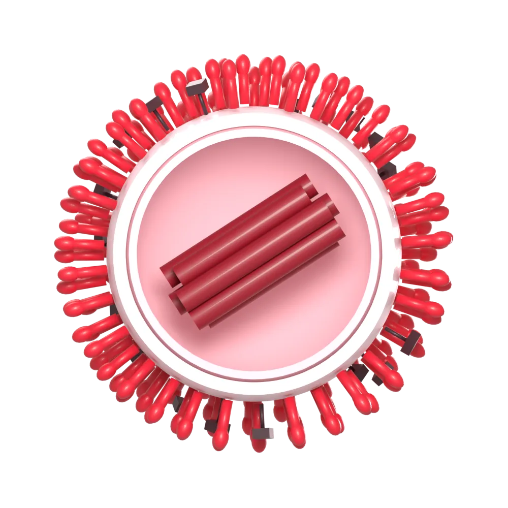
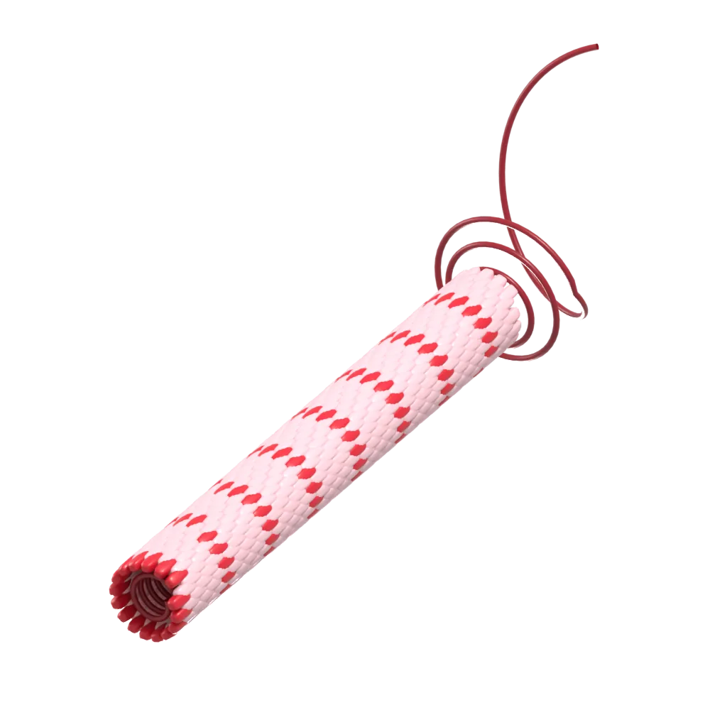

HIV5 labs
Replication, assembly and drug resistance of HIV and other retroviruses, and vaccines that elicit broad antibodies.
Program laboratories study human, animal and plant viruses. Select an area to see the faculty who work on it, then open a profile for details of each laboratory's research and recent publications.
Replication, assembly and drug resistance of HIV and other retroviruses, and vaccines that elicit broad antibodies.

How influenza viruses enter cells, evolve and are controlled by immunity, from basic biology to vaccines.
Epstein-Barr virus, varicella and other herpesviruses: latency, disease and vaccines.
Positive-strand RNA viruses such as enteroviruses, noroviruses and hepatitis C: replication organelles, RNA structure and translation.

Antigens, vectors and mucosal delivery platforms for vaccines against major human and animal viruses.

Cryo-EM, crystallography and computational modeling that reveal the structures of viral proteins and how antibodies recognize them.
Neutralizing antibodies: how they arise, what they target and how vaccines can elicit them.
Innate and adaptive immunity, T cells and mucosal immunity to viral infection.
How viruses mutate, adapt and escape, measured with deep sequencing and experimental evolution.

Plant viruses as crop pathogens and as tools for nanotechnology and RNA biology.

SARS-CoV-2 and other coronaviruses: replication, disease and countermeasures.
Filoviruses such as Ebola and Marburg.